PAGE DE GARDE
SOMMAIRE
Introduction
Contexte et enjeux du projet
L’évolution rapide des pandémies mondiales, comme la COVID-19 et plus récemment la variole du singe (MPOX), a mis en lumière la nécessité de disposer de systèmes d’information performants pour analyser et anticiper ces crises sanitaires. En réponse à ces défis, une nouvelle division de recherche a été créée au sein de l’Organisation Mondiale de la Santé (OMS) afin de centraliser, nettoyer, analyser et visualiser les données historiques des pandémies.
Dans ce cadre, le projet MSPR - DEVIA FS s’inscrit dans une démarche de développement d’une solution de traitement et de visualisation des données, permettant aux chercheurs et décideurs d’accéder à des indicateurs clés et de modéliser des tendances épidémiologiques. L’objectif est de rendre les données accessibles et exploitables, tout en assurant leur qualité et leur pertinence.
Objectif du projet
Le projet vise à concevoir et déployer une solution ETL (Extract, Transform, Load) couplée à une plateforme de datavisualisation permettant d’exploiter efficacement les données de pandémie. Ce système permettra :
- L’ingestion de données provenant de sources ouvertes et fiables.
- Le nettoyage et la structuration des données pour garantir leur intégrité et leur cohérence.
- Le stockage optimisé des informations dans une base de données relationnelle.
- La mise en place d’une API pour l’accès aux données par les développeurs.
- La création de tableaux de bord interactifs facilitant l’analyse et l’interprétation des tendances.
Données utilisées
Pour ce projet, nous avons opté pour un jeu de données unique, issu de Kaggle, qui retrace l’évolution de la pandémie de COVID-19 à travers différentes dimensions. Le dataset sélectionné contient des informations cruciales sur la propagation du virus, sa dynamique et son impact global.
Le fichier CSV exploité, nommé "covid_19_clean_complete.csv", contient des données issues de sources officielles telles que l’OMS, les CDC (Centers for Disease Control and Prevention) et d'autres organismes de santé publique. Il couvre une large période, englobant l’évolution de la pandémie de janvier 2020 à fin 2021, avec des mises à jour régulières.
Ce dataset fournit une granularité jour par jour, permettant une analyse fine de l’évolution du virus à travers 210 pays et territoires.
Portée et livrables du projet
Notre équipe de développement, mandatée par l’OMS et le groupe ANALYZE IT, doit fournir un ensemble de livrables garantissant une solution exploitable et évolutive :
- Un modèle de données décrivant l’architecture des informations stockées.
- Une base de données relationnelle optimisée pour le stockage et l’interrogation des données.
- Un pipeline ETL pour l’extraction, le nettoyage et l’insertion des données dans la base.
- Une API RESTful permettant d’interagir avec les données.
- Un tableau de bord interactif pour la visualisation des indicateurs et tendances.
- Une documentation technique décrivant les choix architecturaux, les outils utilisés et les processus mis en place.
Architecture du projet
Vue d’ensemble : Explication de l’architecture globale de la solution (BRAHIM)
• Schéma UML : Diagrammes des flux de données, modèles conceptuels et relationnels, diagramme de Gantt. (AKRAM ANAS)
Technologies utilisées
1. Langage de programmation
Python 🐍
Python a été choisi comme langage principal en raison de sa popularité et de sa richesse en bibliothèques pour la data science et le développement web.
Pourquoi Python ?
- Écosystème riche pour le traitement des données (Pandas, NumPy, Scikit-learn).
- Facilité d’automatisation des tâches ETL avec Prefect.
- Frameworks web performants comme FastAPI et Flask.
- Interopérabilité avec PostgreSQL et Power BI.
Utilisation dans le projet :
- Manipulation des données avec Pandas.
- Automatisation du pipeline ETL avec Prefect.
- Développement de l’API REST avec FastAPI.
- Visualisation interactive des données avec Power BI.
2. Environnement de développement
Visual Studio Code (VS Code) 🖥️
L’IDE utilisé pour ce projet est Visual Studio Code, un environnement de développement léger, rapide et personnalisable.
Pourquoi VS Code ?
- Excellente prise en charge de Python avec des extensions dédiées.
- Intégration native avec Git pour le versioning du code.
- Extensions puissantes pour le debug, l’exécution et l’analyse du code.
- Support de Jupyter Notebooks pour le prototypage et l’analyse exploratoire.
Utilisation dans le projet :
- Développement et exécution des scripts ETL.
- Debug et test des requêtes SQL dans PostgreSQL.
- Lancement et test de l’API FastAPI.
- Gestion du versioning via Git.
3. Traitement et manipulation des données
Pandas 📊
Pandas est l’outil clé du projet pour la manipulation des données.
Pourquoi Pandas ?
- Manipulation efficace des DataFrames.
- Nettoyage et transformation des données avec des opérations vectorisées.
- Gestion des fichiers CSV avec une prise en charge avancée du parsing.
Utilisation dans le projet :
- Chargement et nettoyage des données depuis le fichier Kaggle.
- Ajout de colonnes calculées comme le taux de mortalité.
- Filtrage et correction des valeurs aberrantes.
Prefect ⚙️
Prefect est utilisé pour l’automatisation du pipeline ETL.
Pourquoi Prefect ?
- Plus simple à configurer qu’Apache Airflow.
- Compatible avec du stockage local et cloud.
- Gestion avancée des erreurs et logs.
Utilisation dans le projet :
- Orchestration du pipeline ETL (Extraction, Transformation, Chargement).
- Surveillance et logs des processus ETL.
- Planification et exécution automatisée des tâches.
4. Stockage et gestion des données
PostgreSQL 🗄️
La base de données choisie est PostgreSQL, une solution open-source robuste et performante.
Pourquoi PostgreSQL ?
- Support natif des types JSON et des requêtes avancées.
- Fiabilité accrue pour les transactions complexes.
- Optimisation possible avec des index sur les colonnes clés.
Utilisation dans le projet :
- Stockage des données nettoyées.
- Indexation sur country et date pour accélérer les requêtes.
- Connexion avec Power BI pour la visualisation des données.
5. Développement de l’API REST
FastAPI 🚀
FastAPI a été sélectionné pour le développement de l’API.
Pourquoi FastAPI ?
- Beaucoup plus rapide que Flask grâce à l’asynchronisme.
- Documentation automatique Swagger intégrée.
- Validation des entrées avec Pydantic pour éviter les erreurs.
Utilisation dans le projet :
- Exposition des données COVID-19 via une API REST.
- Création d’endpoints GET, POST, PUT, DELETE.
- Sécurisation des entrées et validation des types de données.
6. Visualisation des données
Power BI 📊
Power BI a été choisi pour l’analyse interactive des données.
Pourquoi Power BI ?
- Facile à prendre en main pour créer des rapports interactifs.
- Connexion directe avec une API.
- Filtres interactifs pour une exploration des données en profondeur.
Utilisation dans le projet :
- Suivi en temps réel des tendances COVID-19.
- Exploration par pays et région OMS.
- Comparaison des taux de mortalité et de récupération.
Collecte des données
Pour assurer une analyse fiable et précise de l’évolution de la pandémie du COVID-19, nous avons choisi d’utiliser un dataset issu de Kaggle, intitulé "covid_19_clean_complete.csv". Ce dataset a été sélectionné sur la base des critères suivants :
- Données officielles provenant de sources reconnues comme l’OMS et le CDC.
- Granularité quotidienne permettant une analyse fine des tendances pandémiques.
- Couverture géographique étendue couvrant 210 pays et territoires.
- Informations complètes sur les cas confirmés, les décès, les guérisons, les cas actifs et la répartition par région OMS.
Ce dataset nous permet de comprendre l’évolution du virus sur une période donnée, d’explorer les tendances épidémiologiques, et d’établir des indicateurs pertinents pour la visualisation et l'analyse.
Contenu du dataset
Le fichier CSV utilisé contient les colonnes suivantes :
Colonne | Description |
Province/State | Nom de la province ou de l’État (si applicable). |
Country/Region | Pays ou région géographique où les données sont collectées. |
Lat | Latitude de la localisation. |
Long | Longitude de la localisation. |
Date | Date d’enregistrement des données (granularité quotidienne). |
Confirmed | Nombre total de cas confirmés à cette date. |
Deaths | Nombre total de décès recensés. |
Recovered | Nombre total de patients guéris. |
Active | Nombre total de cas actifs (Confirmed - Deaths - Recovered). |
WHO Region | Région géographique selon la classification de l’OMS. |
Ce fichier servira de source principale pour notre pipeline ETL.
Pipeline ETL (Extract, Transform, Load)
Un pipeline ETL (Extract, Transform, Load) a été mis en place afin d’assurer le traitement et l’intégration des données dans une base PostgreSQL. Ce pipeline est conçu avec Prefect, un outil d’automatisation et d’orchestration de flux de données.
Vérification de la connexion à PostgreSQL
Avant de lancer l’ETL, nous devons nous assurer que PostgreSQL est accessible. Un test de connexion est donc effectué avant le chargement des données. Ce test est réalisé en effectuant une tentative de connexion répétée si le serveur n'est pas immédiatement disponible.
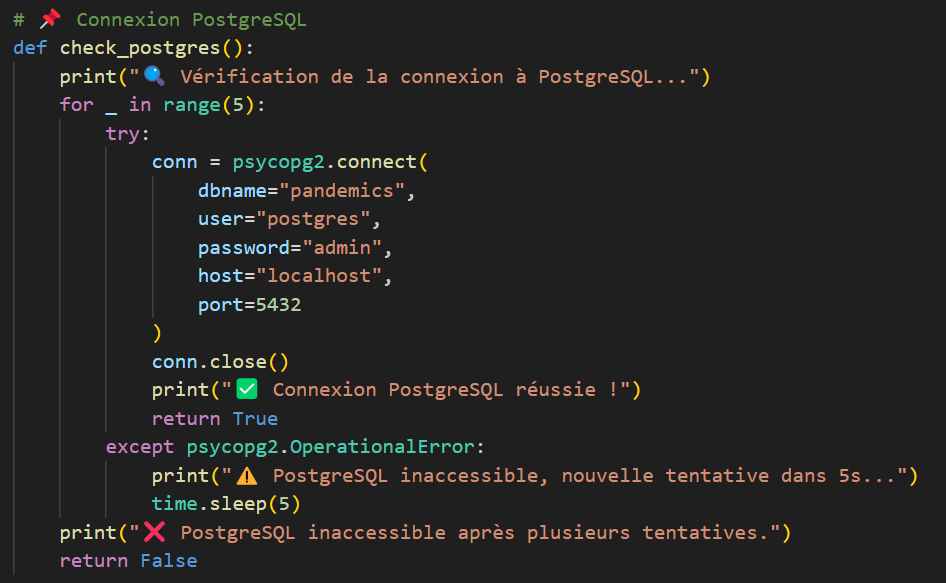
Explication du code :
- Tentative de connexion jusqu'à 5 fois avec une pause de 5 secondes entre chaque essai.
- Gestion des erreurs OperationalError qui surviennent si PostgreSQL n’est pas encore prêt.
- Affichage d’un message d’erreur clair si le serveur est indisponible après plusieurs tentatives.
Extraction des données
La première étape du pipeline consiste à extraire les données depuis l’API Kaggle et à les stocker dans un répertoire local.
Le script suivant permet d’automatiser le téléchargement et l’extraction des fichiers de données :

Explication du code :
- Création automatique d’un dossier data/ pour stocker les fichiers téléchargés.
- Utilisation de l’API Kaggle pour télécharger les fichiers et les décompresser.
- Gestion des erreurs en cas d’échec du téléchargement.
Nettoyage et transformation des données
Une fois les données extraites, elles doivent être prétraitées et transformées pour être exploitables.
Chargement et normalisation des données
Nous chargeons le fichier CSV et effectuons un renommage des colonnes pour faciliter l'analyse :
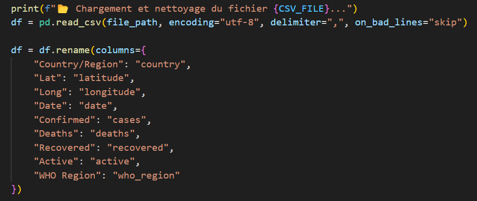
Explication du code :
- Chargement des données brutes en mémoire via Pandas.
- Renommage des colonnes pour standardiser les libellés et assurer une meilleure lisibilité.
- Suppression des lignes problématiques avec on_bad_lines="skip" pour éviter les erreurs lors du chargement.
Correction des incohérences et ajout de colonnes dérivées
Nous devons nous assurer que chaque colonne contient des valeurs de type cohérent :
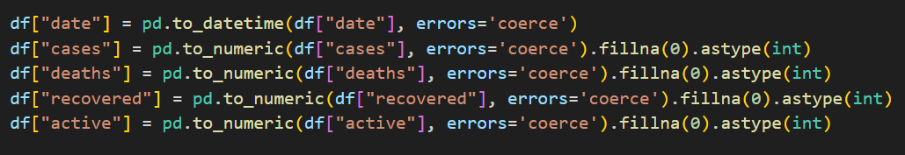
Explication du code :
- Conversion de la colonne date en format datetime pour permettre des filtres temporels.
- Transformation des valeurs en entiers (int) pour cases, deaths, recovered, et active.
- Gestion des valeurs NaN en remplaçant les absences par 0.
Correction des valeurs négatives et incohérentes
Les colonnes recovered et active doivent être vérifiées pour éviter les valeurs erronées :
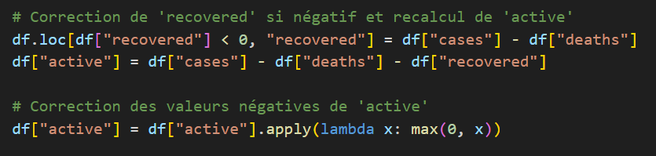
Explication du code :
- Si recovered est négatif, il est recalculé comme cases - deaths.
- Recalcul des active cases pour refléter correctement la réalité.
- Suppression des valeurs active négatives en prenant max(0, x).
Suppression des valeurs aberrantes
Avant de sauvegarder les données, nous devons éliminer les valeurs invalides :
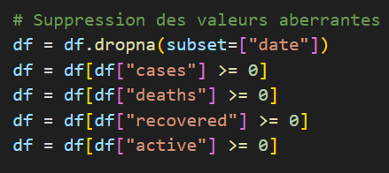
Explication du code :
- Supprime les lignes sans date (NaN dans la colonne date).
- Élimine toute valeur négative pour éviter des erreurs d’interprétation.
Ajout des indicateurs mortality_rate et recovery_rate
Nous ajoutons deux nouvelles colonnes pour analyser les tendances :

Explication du code :
- Taux de mortalité = (deaths / cases) * 100, limité à 100%.
- Taux de récupération = (recovered / cases) * 100, limité à 100%.
Suppression des lignes avec 0 cas
Nous supprimons les enregistrements sans cas confirmés, qui n’apportent aucune valeur analytique.
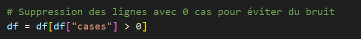
Explication du code :
- Seules les lignes avec cases > 0 sont conservées.
- Évite d’avoir des enregistrements inutiles dans la base.
Sauvegarde des données nettoyées
Enfin, nous sauvegardons les données prêtes à être insérées dans PostgreSQL :
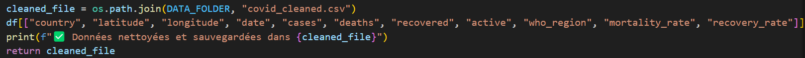
Explication du code :
- Génération d’un fichier covid_cleaned.csv contenant les données propres et enrichies.
- Suppression des indices (index=False) pour un formatage plus propre.
Insertion et mise à jour des données
Nous créons la table pandemic_data si elle n’existe pas :
Puis les données sont insérées dans la base tout en évitant les doublons :
Explication du code :
- Insertion optimisée avec PostgreSQL.
- Mise à jour automatique des enregistrements existants en cas de conflit.
API de consultation des données
L’API REST a été développée avec FastAPI afin de fournir un accès structuré aux données épidémiologiques stockées dans PostgreSQL. Elle permet d’effectuer des requêtes dynamiques, notamment pour récupérer, ajouter, modifier et supprimer des données (CRUD).
Architecture de l’API
L’API repose sur une architecture RESTful et suit les principes suivants :
- FastAPI pour un serveur rapide et performant.
- Pydantic pour la validation et la sérialisation des données.
- Connexion PostgreSQL via Psycopg2 pour interagir avec la base de données.
- Documentation automatique grâce à Swagger UI intégrée à FastAPI.
L’API expose plusieurs endpoints permettant l’interaction avec les données.
Connexion à la base de données
L’API doit interagir avec la base PostgreSQL, hébergée en local ou sur un serveur distant.
Nous définissons une fonction pour établir une connexion sécurisée :

Explication du code :
- Stockage de l’URL de connexion pour éviter les répétitions.
- Création d’une connexion PostgreSQL réutilisable via psycopg2.connect().
- Gestion sécurisée des accès (possibilité d’utiliser des variables d’environnement pour les credentials).
Modèle de données (Pydantic)
Pour assurer la validation des requêtes, nous utilisons Pydantic, qui permet de définir un modèle de données structuré :
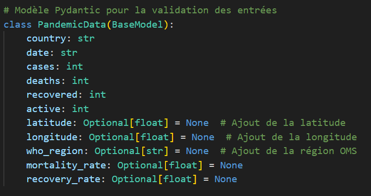
Explication du code :
- Définition d’un modèle Pydantic pour valider les entrées utilisateurs.
- Ajout de champs optionnels (latitude, longitude, who_region, etc.).
- Sécurisation de la cohérence des données en forçant certains types (int, float, str)
Endpoints de l’API
Test de connexion à la base de données PostgreSQL
L’endpoint POST /test_connection/ permet de vérifier l’état de la connexion à la base de données PostgreSQL.
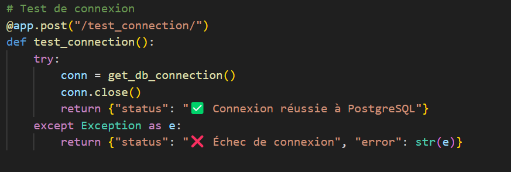
Explication du code :
- Connexion à PostgreSQL
- La fonction get_db_connection() est appelée pour tenter d’ouvrir une connexion à la base de données.
- Si la connexion est établie avec succès, elle est immédiatement fermée pour éviter une surcharge inutile.
- Gestion des erreurs
- Si une erreur survient (Exception), elle est capturée et retournée dans la réponse JSON.
- L'erreur est convertie en chaîne de texte (str(e)) pour fournir un message explicite sur l’échec de connexion.
- Retour d’une réponse JSON
- ✅ Succès : Message indiquant que la connexion est établie avec PostgreSQL.
- ❌ Échec : Message d’erreur détaillant la cause du problème (ex: mauvais identifiants, serveur PostgreSQL arrêté, etc.).
Récupération des données (GET)
L’endpoint GET /data/ permet de récupérer les données de la base en appliquant des filtres facultatifs (pays, date de début, date de fin).
Étape 1 : Définition des paramètres de requête
L'API accepte trois paramètres optionnels :
- country : Filtrer par pays spécifique.
- start_date : Récupérer les données après une certaine date.
- end_date : Récupérer les données avant une certaine date.
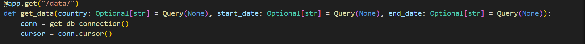
Explication du code :
- L’utilisation de Query(None) signifie que chaque paramètre est optionnel.
- FastAPI gère automatiquement la validation et la documentation des paramètres.
- Une connexion PostgreSQL est établie avant d'exécuter la requête.
Étape 2 : Construction dynamique de la requête SQL
Une requête SQL SELECT est générée dynamiquement pour inclure uniquement les filtres fournis.
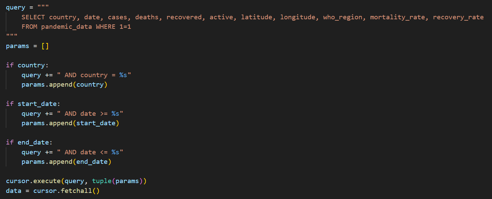
🔹 Explication du code :
- La requête commence par WHERE 1=1 pour simplifier l’ajout dynamique de filtres.
- Si un paramètre est fourni, il est ajouté à la requête et aux paramètres SQL (params).
- Sécurisation contre les injections SQL grâce à l’utilisation de paramètres SQL (%s).
Étape 3 : Conversion des résultats en JSON
Une fois les données récupérées, elles sont converties en un format lisible par l’API.
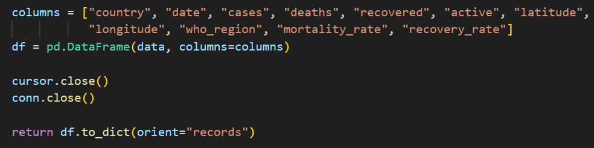
🔹 Explication du code :
- Les résultats SQL sont transformés en DataFrame Pandas, facilitant leur manipulation.
- Les noms de colonnes sont explicitement définis pour garantir la cohérence.
- La réponse est retournée sous forme de JSON (records), chaque ligne étant un objet JSON distinct.
Ajout de nouvelles données (POST)
L’endpoint POST /data/ permet d'insérer une nouvelle entrée dans la base de données. Il garantit également la mise à jour automatique si une donnée pour le même pays et la même date existe déjà.
Étape 1 : Connexion à la base de données
Avant d'insérer une donnée, une connexion à PostgreSQL est établie.

🔹 Explication du code :
- get_db_connection() est appelé pour établir une connexion à PostgreSQL.
- cursor = conn.cursor() permet d'exécuter des requêtes SQL.
Étape 2 : Exécution de la requête SQL d’insertion
Une requête INSERT INTO est utilisée pour ajouter une nouvelle entrée, avec une gestion des conflits pour éviter les doublons.
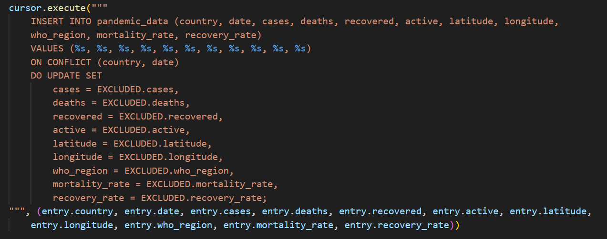
Explication du code :
- INSERT INTO ajoute une nouvelle ligne avec les valeurs fournies.
- ON CONFLICT (country, date) DO UPDATE permet de mettre à jour automatiquement une entrée existante avec les nouvelles valeurs envoyées.
- EXCLUDED.<champ> fait référence aux valeurs proposées par la requête, remplaçant celles existantes en cas de conflit.
Avantages :
- Évite les doublons : Une même entrée (country, date) ne peut pas être insérée deux fois.
- Met à jour les données existantes automatiquement.
Étape 3 : Validation et retour de réponse
Une fois la requête exécutée, la connexion est fermée proprement et un message de confirmation est retourné.

Explication du code :
- conn.commit() valide l'opération et enregistre la transaction dans la base.
- cursor.close() et conn.close() ferment proprement la connexion PostgreSQL.
- La réponse JSON confirme que les données ont bien été insérées ou mises à jour.
Mise à jour des données (PUT)
L’endpoint PUT /data/update/ permet de modifier un enregistrement existant dans la base de données. Il met à jour uniquement les champs fournis dans la requête, évitant ainsi d’écraser des données qui ne sont pas spécifiquement modifiées.
Étape 1 : Vérification de l’existence de l’entrée
Avant toute mise à jour, nous devons nous assurer que l’enregistrement ciblé existe dans la base de données.
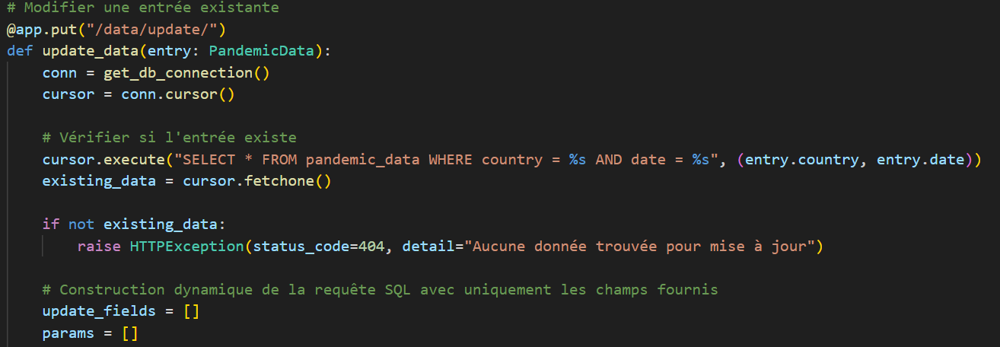
Explication du code :
- On utilise une requête SELECT pour vérifier si un enregistrement correspondant au pays et à la date existe.
- Si aucune donnée n'est trouvée, on renvoie une erreur 404 indiquant que l'entrée n'existe pas
Étape 2 : Construction dynamique de la requête SQL
Nous devons maintenant préparer dynamiquement la requête UPDATE, en incluant uniquement les champs qui ont été spécifiés dans la requête.
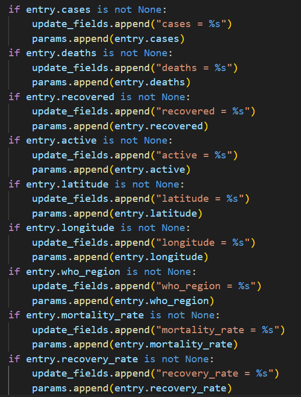
Explication du code :
- Pour chaque champ non nul envoyé dans la requête, on ajoute le champ correspondant dans update_fields et sa valeur dans params.
- Cela permet d’éviter de modifier des valeurs qui ne sont pas spécifiées.
Étape 3 : Exécution de la requête de mise à jour
Une fois les champs construits dynamiquement, nous exécutons la requête SQL UPDATE.
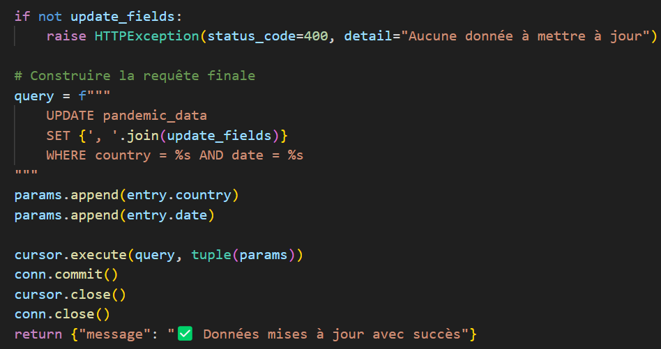
Explication du code :
- Si aucun champ n’a été fourni dans la requête, une erreur 400 est renvoyée.
- La requête UPDATE est construite dynamiquement avec les champs modifiés.
- On exécute la requête avec cursor.execute(query, tuple(params)), puis on valide la transaction avec conn.commit().
Cette méthode évite d’écraser accidentellement des données non spécifiées.
4. Suppression d’une entrée (DELETE)
L’endpoint DELETE /data/ permet de supprimer une entrée spécifique dans la base de données, identifiée par son pays et sa date.
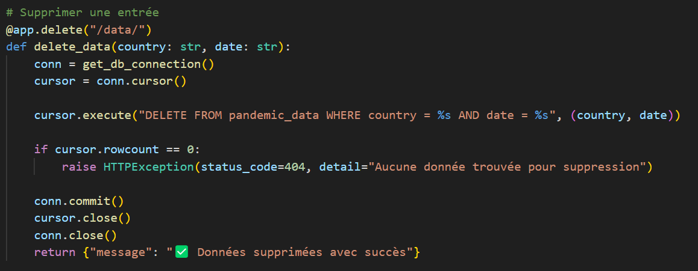
Explication du code :
- La requête DELETE tente de supprimer une entrée avec le pays et la date donnés.
- cursor.rowcount est utilisé pour vérifier si une ligne a été supprimée.
- Si aucune donnée ne correspond, une erreur 404 est retournée.
- Sinon, la suppression est validée avec commit() et un message de confirmation est retourné.
Documentation automatique avec Swagger
L’API génère automatiquement une documentation interactive accessible via Swagger UI à l’adresse : http://localhost:8000/docs
Permet de tester directement les requêtes.
Affiche les modèles de données et les paramètres attendus.
Visualisation et exploration des données avec Power BI
4.1 Objectif de la visualisation des données
L’objectif principal de la visualisation des données est de fournir une analyse interactive et intuitive de l’évolution de la pandémie de COVID-19 en exploitant Power BI. Grâce aux tableaux de bord créés, les utilisateurs peuvent :
- 📊 Explorer la propagation du virus par pays et région.
- 📈 Suivre l’évolution des cas, décès et guérisons au fil du temps.
- 🌍 Visualiser la répartition géographique des cas sur une carte.
- 📉 Comparer les indicateurs de mortalité et de guérison entre différentes régions du monde.
Power BI a été choisi car il permet :
- Une intégration directe avec PostgreSQL.
- La possibilité de consommer des API REST.
- Une interface intuitive et interactive avec des filtres dynamiques.
Connexion des données dans Power BI
L'intégration des données dans Power BI repose sur la connexion via l’api REST
🔹 Explication :
- 🛠️ Utilisation de Web.Contents() pour récupérer les données via API.
- 🔄 Actualisation dynamique sans dépendance à PostgreSQL.
- 🔥 Permet d'interroger les données en temps réel avec des filtres dynamiques.
Structuration des données
Dans Power BI, nous avons importé la table Covid_data, qui contient les colonnes suivantes :

Toutes ces données sont utilisées pour créer des indicateurs visuels pertinents.
Tableaux de bord et visualisations
1. Sélection des filtres interactifs
Power BI permet de filtrer les données selon :
- Un pays spécifique.
- Une plage de dates.
Exemple de filtre appliqué dans le rapport :
L'utilisateur peut sélectionner un pays et une période, puis observer les tendances spécifiques.
Moyenne du nombre de décès et de guérisons par pays
📊 Type de visualisation : Graphique en barres horizontales
📌 Objectif : Comparer les décès et guérisons moyens par pays.

Détails :
- L’axe X représente le nombre de cas (moyenne).
- L’axe Y représente les pays.
- Deux couleurs différentes distinguent les décès et guérisons.
Observations : Les États-Unis et le Brésil affichent le plus grand nombre de décès et guérisons.
Courbe d’évolution des cas, décès et guérisons
📊 Type de visualisation : Graphique en courbes
📌 Objectif : Observer la progression des cas au fil du temps.
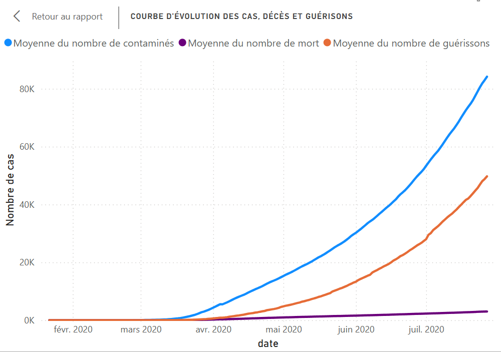
Détails :
- Trois courbes affichent l’évolution des cas confirmés, décès et guérisons.
- Les valeurs augmentent avec le temps, illustrant la dynamique de propagation du virus.
Observation : La courbe des cas confirmés suit une croissance exponentielle, avec une progression plus lente des décès et des guérisons.
Moyenne des cas par région OMS
📊 Type de visualisation : Diagramme circulaire (camembert)
📌 Objectif : Montrer la répartition des cas par région définie par l’OMS.
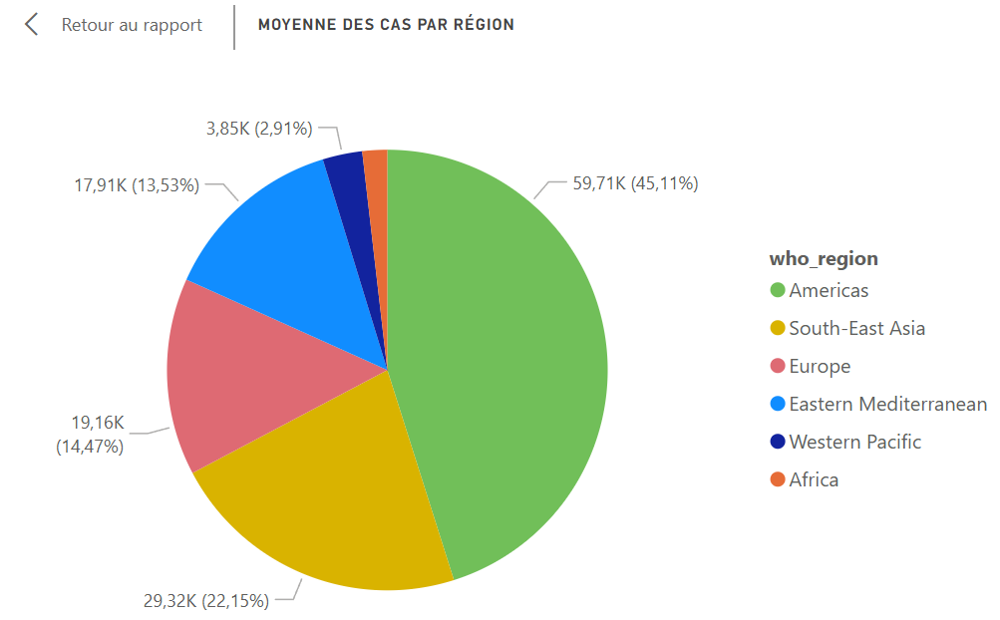
Détails :
- Les couleurs représentent les différentes régions OMS.
- Les proportions indiquent l’impact relatif du virus selon les zones géographiques.
Observation : L’Amérique est la région la plus touchée, suivie de l’Europe et l’Asie du Sud-Est.
Répartition géographique des cas par pays
📊 Type de visualisation : Carte interactive Power BI
📌 Objectif : Représenter visuellement la répartition des cas sur une carte du monde.
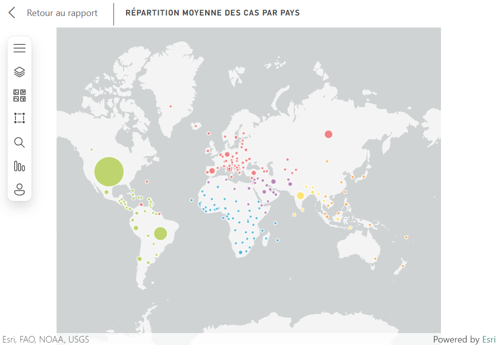
Détails :
- 📍 Chaque point représente un pays.
- 🟢 La taille du point est proportionnelle au nombre de cas.
- 🌎 Code couleur par région OMS pour une lecture plus intuitive.
Observation : Les États-Unis, l’Europe et l’Inde affichent les plus grandes concentrations de cas.
Indicateurs clés calculés
En plus des graphiques, des indicateurs numériques sont affichés :

Ces indicateurs permettent de comparer rapidement l’impact du virus.
Interaction et expérience utilisateur

Pourquoi ces choix de visualisation ?
- Filtres dynamiques pour une expérience interactive.
- Comparaisons claires entre les pays et régions.
- Représentations variées (barres, camemberts, cartes) pour une lecture intuitive.
Avantages de Power BI
- 🔥 Actualisation des données en temps réel via API REST.
- 🚀 Performances optimisées avec PostgreSQL.
- 🎨 Interface visuelle et ergonomique.